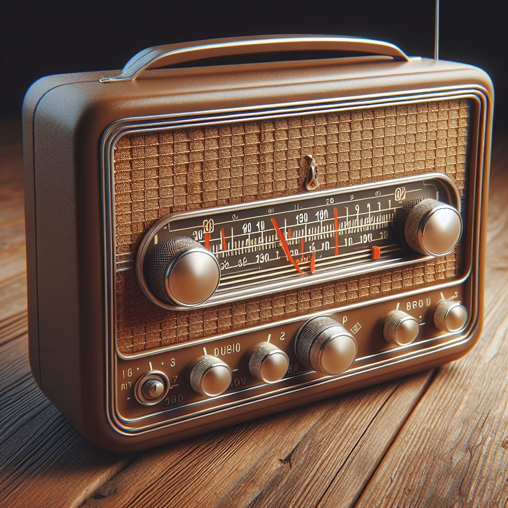

What makes this thing so great?

Welcome to the heart of Radio Revolution! Our Transistor Radio isn't just a device; it's a testament to human ingenuity and progress. Born from the minds of our brilliant engineers, this marvel of modern technology is a testament to our commitment to innovation and excellence.
Crafted with precision and care, each transistor radio embodies our dedication toproviding you with the best audio experience possible. But what exactly makes our Transistor Radio so special? Let's dive deeper into its features and capabilities.
- Compact size: With its small and lightweight design, our Transistor Radio is perfect for those on the move. Whether you're commuting to work, relaxing in the park, or embarking on a road trip, take your favorite tunes with you wherever you go.
- Crystal-clear sound: Powered by state-of-the-art technology, our Transistor Radio delivers crisp, clear audio that rivals even the most sophisticated home entertainment systems. Immerse yourself in your favorite music, catch up on the latest news and sports updates, or simply enjoy the soothing sounds of nature - all with the touch of a button.
- Intuitive controls: Don't let its small stature fool you - our Transistor Radio packs a punch when it comes to sound quality. Its intuitive controls and user-friendly interface make it a breeze to operate, even for those who aren't tech-savvy. Say goodbye to complicated setups and confusing menus - with our Transistor Radio, tuning in to your favorite stations is as easy as turning a dial.
- Stylish design: And let's not forget about style. With its sleek, modern design and eye-catching color options, our Transistor Radio is sure to turn heads wherever you go. Whether you prefer classic black, vibrant red, or elegant silver, there's a color to suit every taste and personality.
But don't just take our word for it - experience the magic of our Transistor Radio for yourself. Order yours today and join the Radio Revolution!